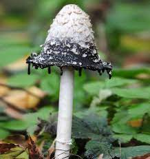
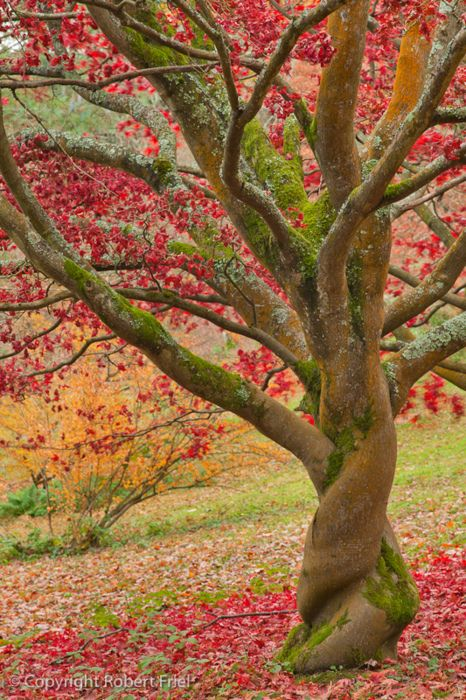

Magical Plants
Plants are not only giving us air but also magical views. From beatiful shrooms to flowers their are a lot of things to explore in the wonderous world of plants
One of the most beatiful wonders that is in this world are mushrooms. With examples like,
- Lactarius Indigo
- Podoserpula Miranda
- Tricholomopsis Rutilans


In the history of plants and herbs a lot of people believed that good spirits would protect and heal the sick by ingesting said ingredients.